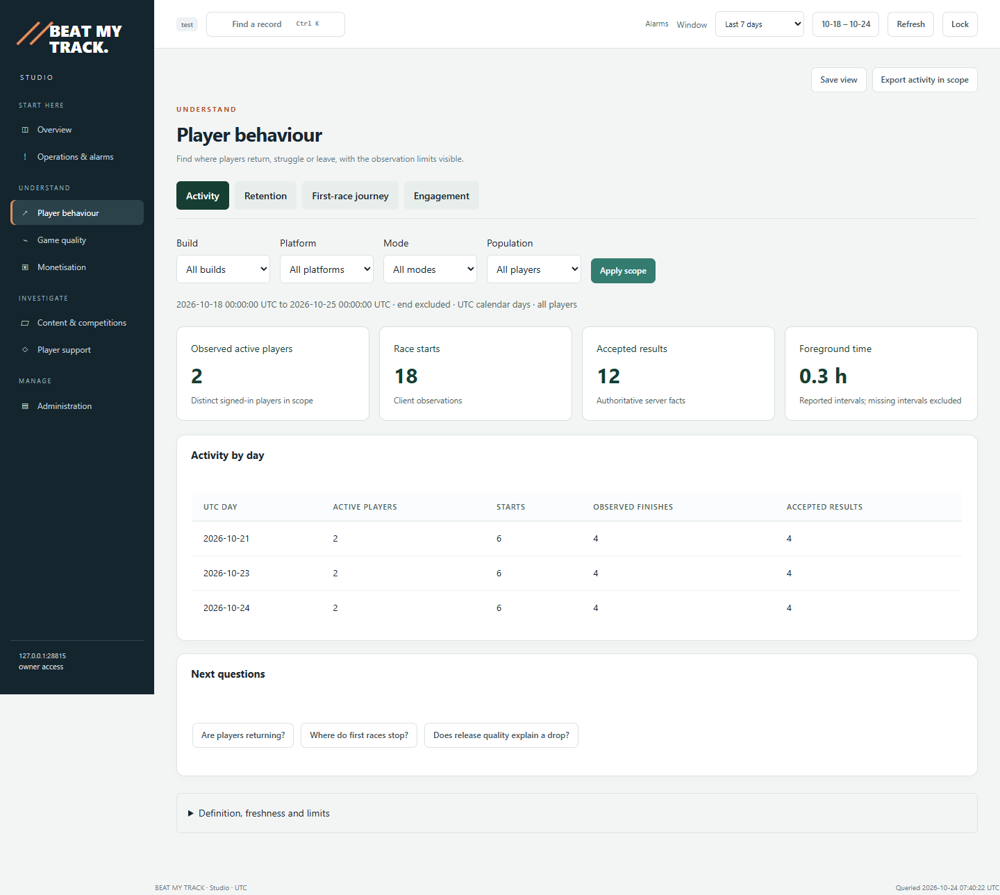
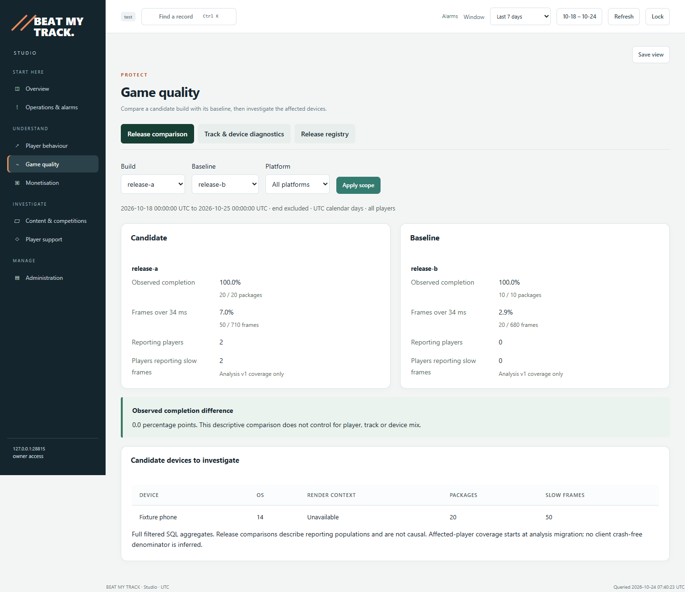
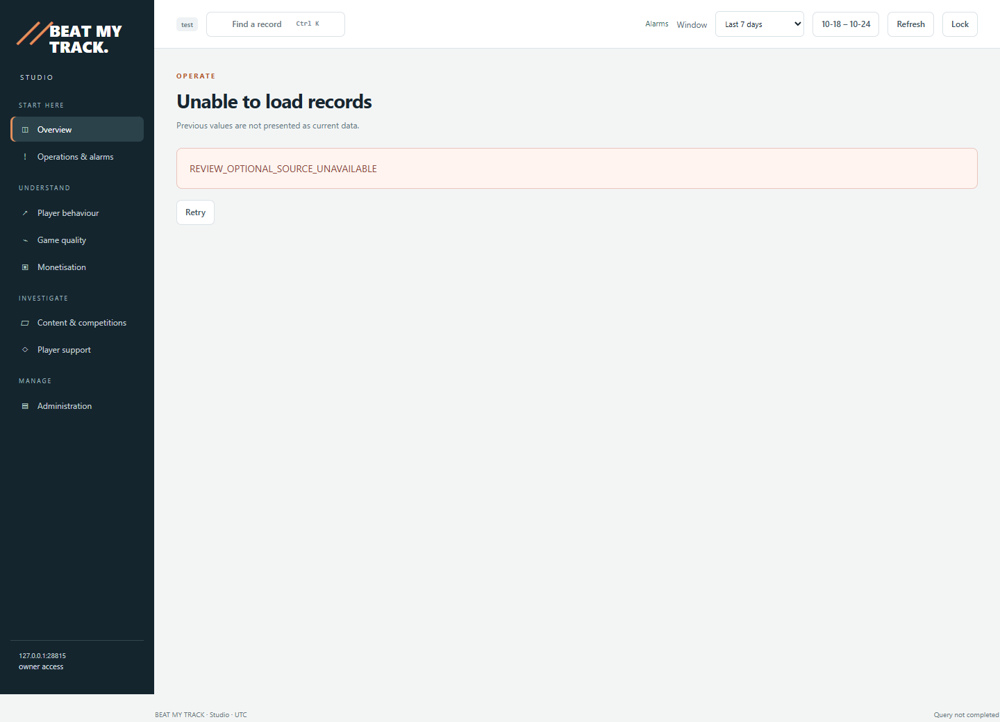
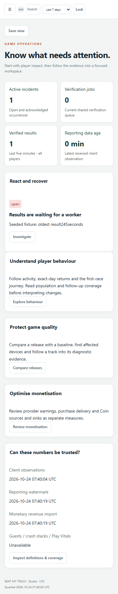

Beat my track · local source review · 24 October 2026
Make the reports trustworthy and the investigations continuous.
The Studio has a useful operational foundation. Reporting trust, continuity of investigation and completion of operational workflows deserve priority over adding more dashboard cards.
What already works well
- Eight focused navigation areas provide a clear starting structure. Desktop and 390-pixel layouts contained their content in the inspected views.
- Race evidence retains immutable player/ticket/track contracts, uses pinned tick rates, redacts credentials and supplies a checksummed bundle.
- Behaviour reports have exact aggregate semantics, cohort follow-up maturity and an isolated reader. Quality diagnostics already include frame buckets, route heatmaps, rendering context, network timing and OS exit evidence.
- Incident occurrences, acknowledgement, ownership, recovery and outbox retries are implemented. Case and moderation decisions retain revision/idempotency fences and audit evidence.
- Finance correctly separates estimated provider money, purchase fulfilment and noncash Coins. Catalogue prices are not presented as revenue.
- All-player default reporting, including artificial accounts, remains an explicit owner requirement. Missing guest coverage and missing crash-free denominators are honestly described.
Prioritized review
| ID | Priority | Finding |
|---|
| STR01 | P1 | Activity CSV bypasses the isolated reporting reader |
| STR02 | P1 | Guided links silently change the population and reporting question |
| STR03 | P1 | Freshly queried pages can present stale observations without a visible warning |
| STR04 | P1 | One optional feed failure removes the entire overview |
| STR05 | P1 before World Ranking launch | World Ranking status and settlement are outside the Studio workflow |
| STR06 | P2 | Release comparison needs comparable samples and actionable device evidence |
| STR07 | P2 | Behaviour reports answer too few product questions |
| STR08 | P2; urgent for a staffed moderation queue | Case triage fields do not help prioritize the case list |
| STR09 | P2 | Save view cannot faithfully reopen several places where it is offered |
| STR10 | P2 | Race investigation lacks the context needed to diagnose a player report |
| STR11 | P2 before staff expansion | Staff sign-in and roles need an ordinary staff workflow |
| STR12 | P2 | Investigation evidence sits too far below the first screen |
Workspace coverage
| Workspace | Useful foundation | Main gap |
|---|
| Overview | Clear incident-first entry | Partial-source resilience; exact KPI drilldown context |
| Operations & alarms | Durable incident and retry workflows | Activation evidence; newer worker coverage; recovery evidence |
| Player behaviour | Activity, mature retention, first-race journey, sessions | Freshness, comparison periods, focused publication/discovery reports |
| Game quality | Weighted frame totals, detailed device/track/network views | Comparable samples, missing-versus-zero coverage, direct device investigation |
| Monetisation | Separated provider money, delivery and Coin flows | Refund/reversal/reconciliation lifecycle before live-money reliance |
| Content & competitions | Published catalogue, pinned Rivalry/Challenge evidence and future calendar | World Ranking workflow and generation visibility |
| Player support | Linked cases, player history and accountable moderation | Urgent/overdue/assigned queue views; run-level diagnostic correlation |
| Administration | Definitions, saved views, staff gates, releases and experiments | Exact saved locations, browser sign-in, report version/snapshot handling |
Findings and acceptance criteria
STR01 · P1 · Confirmed source routing defect
Activity CSV bypasses the isolated reporting reader
An operator can run a broad export on the gameplay database even though the matching report has a dedicated reader, deadline and concurrency guard. The download also has no report snapshot or watermark to reconcile it with the screen.
- Evidence
- The report uses studio_reporting.snapshot; the CSV uses the primary session_factory and limits output after aggregation. In a deliberately divergent test mirror, the report returned 546 starts while the CSV returned 18. This proves the separate source paths; it is not a naturally occurring replica-consistency failure or a claim about live totals.
- Recommended change
- Route export through the same isolated reader and query policy. Include effective dates, filters, definition version and watermark in a companion manifest. Either export a frozen report snapshot or clearly identify a new query.
- Acceptance
- SQL tracing shows no analytical fact scan on primary for report or export; busy/timeouts fail promptly; an unchanged snapshot produces matching aggregates and export totals.
studio_governance.py:362 · studio_analysis.py:253 · studio_reporting.py:25
Requirement mapping: BMT-006, BMT-019, BMT-100, BMT-105
STR02 · P1 · Browser-reproduced report context defects
Guided links silently change the population and reporting question
An analyst investigating one build or population can unknowingly continue with all builds and players. The overview result count also leads to a different time definition.
- Evidence
- From build=release-a, platform=android, mode=free_race and population=real, all three Next questions links retained only dates. Workspace tabs preserve more filters. The overview Verified results card says Last five minutes but its link inherits the selected multi-day dates; the directory filters created_at while the KPI counts finished_at.
- Recommended change
- Use one supported-scope link builder across tabs, actions and KPI drilldowns. Preserve compatible fields and explicitly explain unsupported ones. Give operational KPIs exact pulse intervals and the same timestamp semantics as their evidence lists.
- Acceptance
- A scoped Activity → Retention → Activity and Activity → Quality round trip retains all supported dimensions. The last-five-minute drilldown reconciles to the KPI by verification terminal time.
platform.js:47 · app.js:14 · admin.py:91 · admin.py:109
Requirement mapping: BMT-002, BMT-019, BMT-020
STR03 · P1 · Fault-injected browser reproduction and report feature gap
Freshly queried pages can present stale observations without a visible warning
The footer records when the query ran. It does not tell the operator whether the underlying projection is current enough for a decision.
- Evidence
- A valid-shape injected response with a two-day-old watermark and three-day-old latest observation showed ordinary headline counts and no warning. Freshness was inside a closed details section. Activity also displays today alongside complete days without an in-progress label, and omits dates with no fact rows.
- Recommended change
- Show source watermark, lag, pending work and coverage beside the headline. Distinguish current partial day, observed zero, unobserved day, stale projection and disabled collection. Keep historical reports available with explicit status.
- Acceptance
- A stale or backlogged projection is visibly labelled without opening details; zero activity is distinct from missing coverage; period comparisons exclude or consistently match partial days.
platform.js:50 · app.js:114 · studio_analysis.py:394
Requirement mapping: BMT-016, BMT-017, BMT-020, BMT-100
STR04 · P1 · Fault-injected browser reproduction
One optional feed failure removes the entire overview
An incident-response entry point becomes least useful during a partial outage, even when queue data and incident records are available.
- Evidence
- Returning 503 only for /v1/admin/metrics replaced the whole overview with Unable to load records. The overview awaits metrics and incidents with Promise.all, then falls into the global page error handler.
- Recommended change
- Load independent cards separately and expose per-source unavailable states with retry. Retain successful operational information and its observation time.
- Acceptance
- Failure of metrics leaves incident response and verification backlog visible; failure of incidents leaves the other valid cards visible. No failed card is shown as a healthy zero.
platform.js:21 · app.js:123
Requirement mapping: BMT-071, BMT-100, BMT-104
STR05 · P1 before World Ranking launch · Source-confirmed missing integration
World Ranking status and settlement are outside the Studio workflow
Staff cannot readily see or explain a stuck ranking generation, pending correction or stale published snapshot from the normal competition and worker views.
- Evidence
- GET /v1/admin/ranking/status and audited correction APIs already exist. Studio competition choices are Rivalry and Challenges. The queue registry covers race, publication, validation, erasure, histogram, news and notification, plus a product projection summary; it does not include ranking settlement or achievement projection. The watchdog derives queue signals from that registry.
- Recommended change
- Integrate existing ranking status into Content & competitions and Operations. Expose published snapshot, working phase, progress, publication age, retry/error state and audited correction history/preview. Add bounded health coverage for ranking and achievement workers without running settlement in an HTTP read.
- Acceptance
- An owned stalled-generation fixture is visible and alarmed; an intentionally disabled future launch is labelled correctly. Staff can explain a published rank and a rebuilding correction through linked evidence.
world_ranking.py:273 · world_ranking.py:216 · studio_jobs.py:33 · platform.js:104
Requirement mapping: WRI01-WRI08, BMT-034, BMT-071, BMT-077
STR06 · P2 · Report quality and decision-support gap
Release comparison needs comparable samples and actionable device evidence
The current cards are useful descriptive totals, but provide limited support for a release decision or for identifying a regression in a smaller device group.
- Evidence
- The fixture baseline had 10 race packages and zero analysis-v1 reporting players, with no prominent source-coverage warning. A nonexistent baseline displayed 0/0 packages and zero players. The only comparison delta is completion; device rows show package and slow-frame counts, without frame denominators, rates or direct diagnostic links. Candidate/baseline filters support platform, but no matched device/OS/track scope.
- Recommended change
- Show sample sufficiency and independent coverage for packages versus user counts. Add slow-frame deltas, normalized device rates and links that retain build/device/OS/track context. Offer descriptive matched-scope comparisons with explicit minimums; retain the existing noncausal wording.
- Acceptance
- Missing coverage is distinct from zero affected users; each device rate has a denominator; an analyst can open a problem segment directly; tiny or incompatible samples do not receive a release-quality verdict.
studio_metrics.py:163 · platform.js:53
Requirement mapping: BMT-028, BMT-031, BMT-070, BMT-077
STR07 · P2 · Missing focused product reports; existing data and legacy renderers partly present
Behaviour reports answer too few product questions
Staff can inspect activity, returns, first-race journey and sessions, but cannot easily tell what changed over time or whether discovery, publication and store journeys are improving.
- Evidence
- The active behaviour workspace has four tabs and no previous-period comparison or activity trend visualization. productAnalyticsView still contains publication-request reach, car/biome exposure and selection, store actions, challenge actions and collection-loss reports; it is loaded but has no caller in the active UI.
- Recommended change
- Add focused trend and previous-comparable-period reports, publication-to-external-racer reach, discovery exposure-to-selection, and purchase-delivery funnels using governed sources. Reuse valid prepared facts with bounded dedicated reads. Preserve the intentional retirement of the heavy duplicate historical bundle and local-draft collection.
- Acceptance
- Each focused report is reachable, has a source/denominator/maturity contract, and runs within the reporting budget. Artificial accounts remain in the default totals; no population policy is silently changed.
platform.js:29 · product_analytics.js:67 · app.js:95
Requirement mapping: BMT-020, BMT-022, BMT-023, BMT-024, BMT-027, BMT-047
STR08 · P2; urgent for a staffed moderation queue · Source-confirmed incomplete operator workflow
Case triage fields do not help prioritize the case list
Urgent, overdue or assigned cases can sink below recently updated routine cases. Operators must open individual cases to find the information needed to choose their next task.
- Evidence
- Case triage stores assignee, normal/high/urgent priority, due_at and linked incident. The case directory projects the base case, filters only state and orders by updated_at. It displays page-local unresolved counts without priority, due date, assignment, overdue or SLA filtering.
- Recommended change
- Join a bounded triage projection into the list. Add My cases, unassigned, urgent and overdue views, due-date sorting and search by player/track/reference. Retain append-only evidence and owner-authorized actions.
- Acceptance
- An older urgent overdue case is discoverable from the first queue view without opening every case; assignment and due-date changes update the list and preserve an audit trail.
studio_governance.py:274 · studio_cases.py:74 · operations.js:45
Requirement mapping: BMT-033, BMT-050, BMT-054, BMT-056
STR09 · P2 · Browser-reproduced saved-view defect
Save view cannot faithfully reopen several places where it is offered
An operator believes an investigation has been saved but returns to a directory or another workspace. Unsupported detail routes can fail validation.
- Evidence
- Saving players/<fixture-id> stored route=players with dates, discarding the player ID. The same first-path-segment logic loses system/jobs. The server route allowlist excludes races while the global Save view button is offered on race pages. The filter allowlist also omits the case-list status field.
- Recommended change
- Define validated route-specific saved locations and filters, preserving safe entity identifiers and subroutes. Restrict the button where the feature is unsupported. Provide rename/delete so the 50-view limit is manageable.
- Acceptance
- Player, race, queue and filtered-case round trips reopen their exact intended location, or clearly explain that only a workspace filter is being saved; saved-view limits have a recovery path.
platform.js:173 · studio_governance.py:32 · studio_governance.py:46
Requirement mapping: BMT-002, BMT-019, BMT-100
STR10 · P2 · Declared evidence gap
Race investigation lacks the context needed to diagnose a player report
Support can prove the pinned result and current outcome, but cannot reliably connect a reported hitch, rejection or delay to the submitting build, device and verifier attempt.
- Evidence
- The race evidence API explicitly marks client diagnostics, request trace, client session spans and bundle expiry unavailable. Attempt count is retained, but executed validator versions and per-attempt timing are not. Network summaries retain selected request IDs elsewhere; a persisted correlation to the run is absent.
- Recommended change
- Persist minimal governed correlation at receipt and verification boundaries: request ID, build, supported device/render context, verifier version and bounded phase timings. Link the existing quality/network views and case. Keep enhanced capture separately consented and purpose-bound.
- Acceptance
- An owned failed-run fixture can be followed from case to submission, request evidence and specific verifier attempt without guessing from nearby timestamps or exposing credentials/proof bytes.
studio.py:160 · studio.py:161 · studio.py:163
Requirement mapping: BMT-003, BMT-051, BMT-052, BMT-053, BMT-071
STR11 · P2 before staff expansion · Partly implemented access feature and missing UX
Staff sign-in and roles need an ordinary staff workflow
Pasting an identity token or shared legacy key is awkward for daily staff use. The owner/analyst split grants either broad writes or read-only inspection, leaving no dedicated support or release role.
- Evidence
- The login requires a Staff identity token or legacy key. Named staff audiences, allowlists, signed MFA claims and revocation are implemented. Browser SSO is still an integration dependency; this is not an absence of backend identity controls. The reviewed read handlers do not create a purpose-bound sensitive-read audit record.
- Recommended change
- Provide a configured sign-in/session flow, meaningful expiry/re-authentication UX, and role policies for actual staff duties. Add purpose and audit coverage for sensitive support access and evidence downloads. Keep current restrictions until these policies are chosen.
- Acceptance
- A staff member signs in without copying a raw token, sees expiry/revocation clearly, and can perform their assigned support tasks without unrestricted release/finance powers. Sensitive reads have appropriate traceable purpose.
app.js:31 · studio_access.py:26 · admin.py:31
Requirement mapping: BMT-080, BMT-081, BMT-082, BMT-085
STR12 · P2 · Measured usability and report-distribution gap
Investigation evidence sits too far below the first screen
The visual hierarchy is calm and readable, but recurring operators spend substantial space and scrolling on headings and card padding before reaching evidence.
- Evidence
- At 1280×800, the Activity table began at y=726, catalogue at y=711 and the candidate-device table at y=1021. Core 390-pixel pages stayed contained, but long tables require horizontal scrolling inside their panels. Export activity appears on every behaviour tab and always downloads the narrow activity CSV, including on Retention or Engagement.
- Recommended change
- Offer a compact operator density, make each report action explicit, and add report-specific exports containing definitions, scope, maturity and source time. Use readable charts with table alternatives for trends. Consider scheduled summaries only after report semantics are stable.
- Acceptance
- The main evidence is reachable with less scrolling at 1280×800; Retention offers its own cohort export or clearly labels Activity-only export. Keyboard, real 200% browser zoom, screen-reader and contrast checks receive separate acceptance.
app.js:110 · platform.js:174 · platform.css:1
Requirement mapping: BMT-019, BMT-100, BMT-101, BMT-103
Conditional critical readiness gates
These are required before depending on the associated feature in production. Existing adapters and services are credited; their current live activation was not assessed.
STRG01 · Before relying on automatic incident response
Activate and prove the full monitoring chain
Watchdog, incident ledger, source freshness, signed outbox and notification retries are implemented. Independent hosting, supervised collection/delivery and actual receiver acceptance require environment evidence. This review did not inspect their live configuration.
Required evidence: Show expected sources, last successful probe, supervised collector health, delivery test, exhausted retries and recovery. Exercise an owned outage while the API is unreachable, including a stopped watchdog. Add the newer ranking coverage in STR05.
STUDIO_PLATFORM_ACTIVATION.md:22 · studio_incidents.py:384
STRG02 · Before treating real-money commerce as operationally complete
Close purchase delivery, refund and reconciliation gaps
Provider verification and account binding, retry-safe grants, estimated AdMob imports and separate Coin accounting exist. Full live Billing/notification/refund/revocation handling and settled financial reconciliation are declared dependencies. Finance cannot establish player LTV or ARPDAU from catalogue prices or aggregate ad estimates.
Required evidence: Provide a purchase-exception queue, provider completion/retry state, refunds/revocations/reversals, outstanding liabilities and reconciled currency/basis totals. Build attribution and mature value cohorts before offering LTV or ARPDAU.
STUDIO_PLATFORM_ACTIVATION.md:67 · studio_finance.py:133
STRG03 · Before making production recovery guarantees
Expose backup and restore evidence with owners and age
The service-health view has a configured backup marker and correctly says that it does not observe cloud backups or prove restore success. A source-connected backup/restore evidence workflow and tested recovery objectives remain absent from Studio.
Required evidence: Surface backup identity, age, coverage, last successful owned restore drill, measured recovery point/time, failure actions and accountable owner. Keep account recovery and compensation separate, with verified policy and case-bound authority before enabling them.
monitor_views.js:94 · studio.py:58
Suggested delivery order
- Fix report/export isolation, scope propagation, freshness and partial-source overview handling (STR01–STR04).
- Add ranking status and monitoring before its launch; establish applicable monitoring and recovery evidence (STR05, STRG01, STRG03).
- Finish release diagnostics, support prioritization and saved-location continuity (STR06, STR08, STR09, STR10).
- Add focused product comparisons/reach reports and report-specific exports (STR07, STR12).
- Complete staff and real-money operational dependencies when those capabilities are activated (STR11, STRG02).
Selected browser evidence
All screenshots contain synthetic owned fixtures. Open an image for the full view.

Activity: source definitions are available, while freshness sits in a closed details section.
Release comparison: two sources can have different coverage; the device table needs normalized rates and drilldowns.
Injected metrics-only failure removes otherwise available operational cards.
Phone-width layout is contained; this is a browser viewport check, not a physical-device test.Validation and limits
55 browser views; zero JavaScript errors; zero page-wide horizontal overflows. Inspected viewport sizes: 1440×1000, 1280×800 and 390×844. Owner and analyst views are included. One deliberate optional-feed failure produced the expected failing overview recorded in STR04.
Backend checks: 62 passed, 1 skipped, 1 setup error. The PostgreSQL fixture connection timed out on localhost:55439. This is not a PostgreSQL pass or a product assertion failure. Detailed evidence: final browser observations and reproductions, initial completed browser run, test results, reproducible browser harness.
The first browser fixture failed because test environment was combined with development auth. The review-only fixture was corrected to disable development auth/purchase simulation before starting; production code was not changed.
- No runtime implementation or configuration changed.
- No deployment, live mutation, notification, financial provider interaction or device action.
- Phone/tablet attachment was not checked and no physical-device test was performed.
- No production benchmark, complete accessibility certification, penetration test or restore drill.
- Existing concurrent work was preserved.
Actual commands
.tools/backend-venv/Scripts/python.exe build/studio-review-2026-10-24/review_browser.py
$env:PYTHONPATH="backend"; .tools/backend-venv/Scripts/python.exe -m pytest backend/tests/test_studio_reporting.py backend/tests/test_studio_performance.py backend/tests/test_studio_platform.py backend/tests/test_studio_operations.py -q --tb=short -p no:cacheprovider --junitxml=docs/evidence/studio-review-2026-10-24/pytest.xml
.tools/backend-venv/Scripts/python.exe docs/evidence/studio-review-2026-10-24/build_review.py